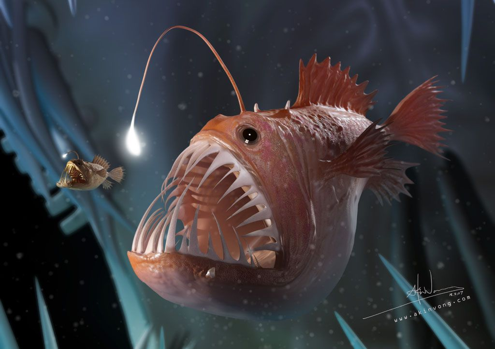
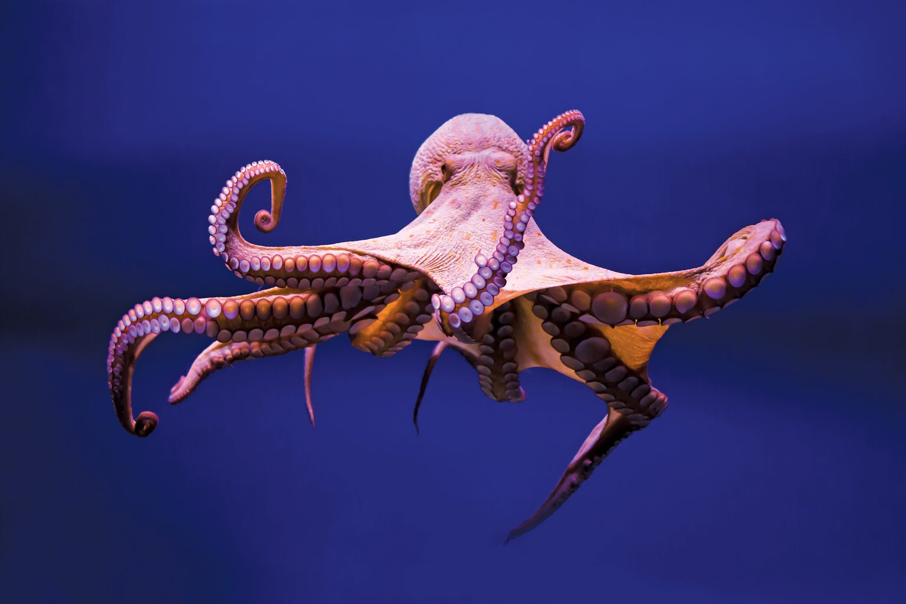
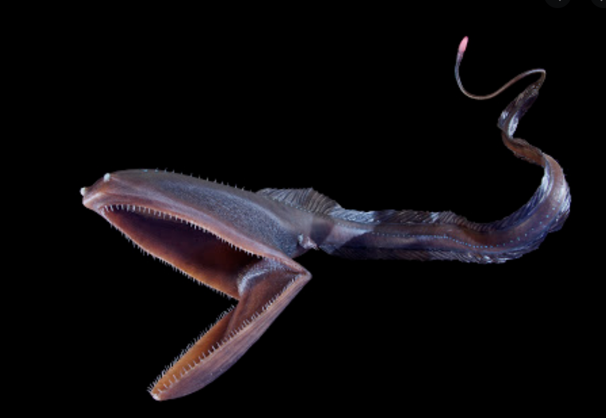

The Dark Zone
|  |  |  |
| The Anglerfish | Octopus | Gulper Eel |
These fish live in the depths of the sea, not needing any light to survive. With this depth, they don't encounter suitable prey on a regular basis, which is why their bodies are modified to help them capture any prey they can come across. With their large mouths and stomachs and long, sharp teeth, they are able to capture and swallow anything that comes their way. In addition, their 'lure' (on the top of the fish, looks like a fin) contains many bacteria that have the ability to make their own light. The anglefish are able to hide or show their lure; which is extremely useful when attempting to attract suitable prey.
These eight-tentacled creatures inhabit the midnight zone, staying on the floor of the ocean for the majority of the day. At night, when the sunlight zone and twilight zone are dark, they come up to hunt for prey. The unique feature held by these animals is their ability to change colour. This allows them to not only communicate with other octopus, but helps them avoid becoming prey by letting them blend into their surroundings.
These creatures are adapted to life in the deep sea with their numerous unique functions. Similar to the anglerfish, they have a light producing organ called the photophore at the end of their long tail that is used to attract prey. The photophore can glow pink and give off red flashes to lure fish and other sea creatures. With their gigantic, loosely hinged mouths, they are able to snap up prey much bigger than them. This is also made possible through their stretchable stomachs, which can extend to accommodate prey of any size.